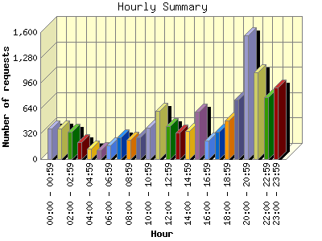
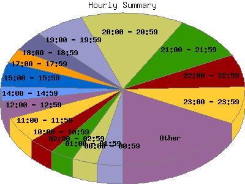

Report generated by Analog 6.0 and Report Magic 2.21
|
Web Server Statistics for "Harish Narayanan (hnarayan) - April 2005" Report generated by Analog 6.0 and Report Magic 2.21 |
The Hourly Summary identifies the level of activity broken down by each hour. Remember that one page hit can result in several server requests as the images for each page are loaded. This summary also compares the level of activity during working hours and after hours as a total for the report time frame.


| Hour | Number of requests | Number of bytes transferred | Percentage of the bytes | Percentage of the requests | |
|---|---|---|---|---|---|
| 1. | 00:00 - 00:59 | 381 | 23.002 MB | 6.81% | 3.34% |
| 2. | 01:00 - 01:59 | 384 | 9.482 MB | 2.81% | 3.37% |
| 3. | 02:00 - 02:59 | 348 | 8.722 MB | 2.58% | 3.05% |
| 4. | 03:00 - 03:59 | 213 | 12.747 MB | 3.77% | 1.87% |
| 5. | 04:00 - 04:59 | 134 | 10.849 MB | 3.21% | 1.18% |
| 6. | 05:00 - 05:59 | 111 | 8.971 MB | 2.66% | 0.97% |
| 7. | 06:00 - 06:59 | 176 | 9.476 MB | 2.81% | 1.54% |
| 8. | 07:00 - 07:59 | 270 | 9.721 MB | 2.88% | 2.37% |
| 9. | 08:00 - 08:59 | 245 | 7.925 MB | 2.35% | 2.15% |
| 10. | 09:00 - 09:59 | 273 | 23.935 MB | 7.09% | 2.40% |
| 11. | 10:00 - 10:59 | 398 | 15.475 MB | 4.58% | 3.49% |
| 12. | 11:00 - 11:59 | 612 | 14.753 MB | 4.37% | 5.37% |
| 13. | 12:00 - 12:59 | 420 | 11.571 MB | 3.42% | 3.69% |
| 14. | 13:00 - 13:59 | 339 | 14.191 MB | 4.20% | 2.98% |
| 15. | 14:00 - 14:59 | 356 | 17.016 MB | 5.04% | 3.12% |
| 16. | 15:00 - 15:59 | 595 | 13.565 MB | 4.02% | 5.22% |
| 17. | 16:00 - 16:59 | 237 | 16.342 MB | 4.84% | 2.08% |
| 18. | 17:00 - 17:59 | 344 | 6.800 MB | 2.01% | 3.02% |
| 19. | 18:00 - 18:59 | 483 | 12.882 MB | 3.81% | 4.24% |
| 20. | 19:00 - 19:59 | 752 | 15.418 MB | 4.56% | 6.60% |
| 21. | 20:00 - 20:59 | 1,557 | 14.812 MB | 4.38% | 13.66% |
| 22. | 21:00 - 21:59 | 1,089 | 25.651 MB | 7.59% | 9.56% |
| 23. | 22:00 - 22:59 | 777 | 14.664 MB | 4.34% | 6.82% |
| 24. | 23:00 - 23:59 | 901 | 19.824 MB | 5.87% | 7.91% |
| Work Hours (8:00am-4:59pm) | 3,475 | 134.774 MB | 39.90% | 30.50% | |
| After Hours (5:00pm-7:59am) | 7,920 | 203.020 MB | 60.10% | 69.51% | |
This report was generated on May 10, 2005 18:43.
Report time frame April 1, 2005 00:36 to April 30, 2005 23:55.
| Web statistics report produced by: | |
 Analog 6.0 Analog 6.0 |  Report Magic 2.21 Report Magic 2.21 |